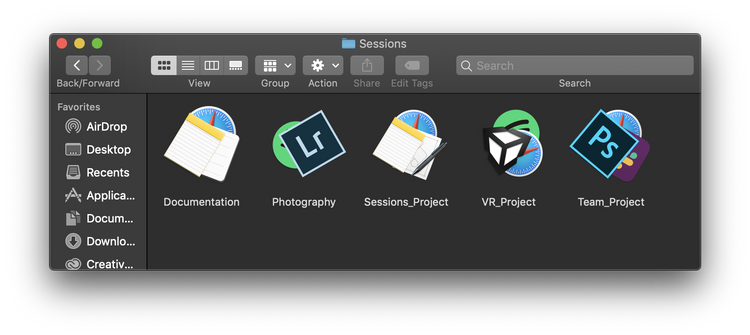

Summer 2019
4 Weeks
Sessions is a tool that allows you to save and access different digital workspaces, which are collections of apps, files, and websites that are related to a single task.
This tool facilitates greater focus by reframing the way we use our computers to be more task-oriented, and less app-oriented.
My friends Cameron and Marisa capture the essense of this project clearly—modeling computer spaces closer to thinking spaces.
I want an adaptable digital computer space that generates according to function/the purpose I have in mind for actions. Ex: when I code, I want the computer to know how to arrange my windows coherently (lol, finder, stackoverflow, sublime, terminal, etc)
— Marisa Lu (@lumar_isa) December 24, 2018
In this project, I make a tool that allows you to save these digital spaces and access them later, greatly reducing the mental cost of switching tasks, and facilitating greater focus through cleaner workspaces.
For this project, I made a working prototype that fulfilled the main functions. This allowed me to understand the user experience and receive feedback from other people I beta tested with.
I decided to focus on the core functions: creating, saving, opening, and closing. Since these are familiar functions in authoring tools, I thought they would afford an intuitive user experience.
Two versions of the options (create, open, and close), on desktop and touchbar.
It's helpful to have visual affordances for quick understanding of essential information. Each Session has an automatically generated icon based on the apps used.This was made through Command Line tools like imagemagick and fileicon.
Examples of some programmatically generated icons!
Custom icon in action (saving a new Session)
I decided to save the sessions as JSON files so they could be easily parsed and meaningful information could be extracted. Made possible through JSONHelper.
Example JSON file for a Session. The saved information includes app name, path, window layouts, and window information.
There are some things I couldn’t do quickly enough in my prototyping stage, so in my last step I refined and added some details that I would have liked to add using Sketch.
Example of a proposed save state.
Throughout this project, I kept thinking that this could be expanded to an entire operating system. I felt restricted by the app-based paradigm that macOS currently exists in, but I wanted to ultimately make something functional that could potentially help many people now!